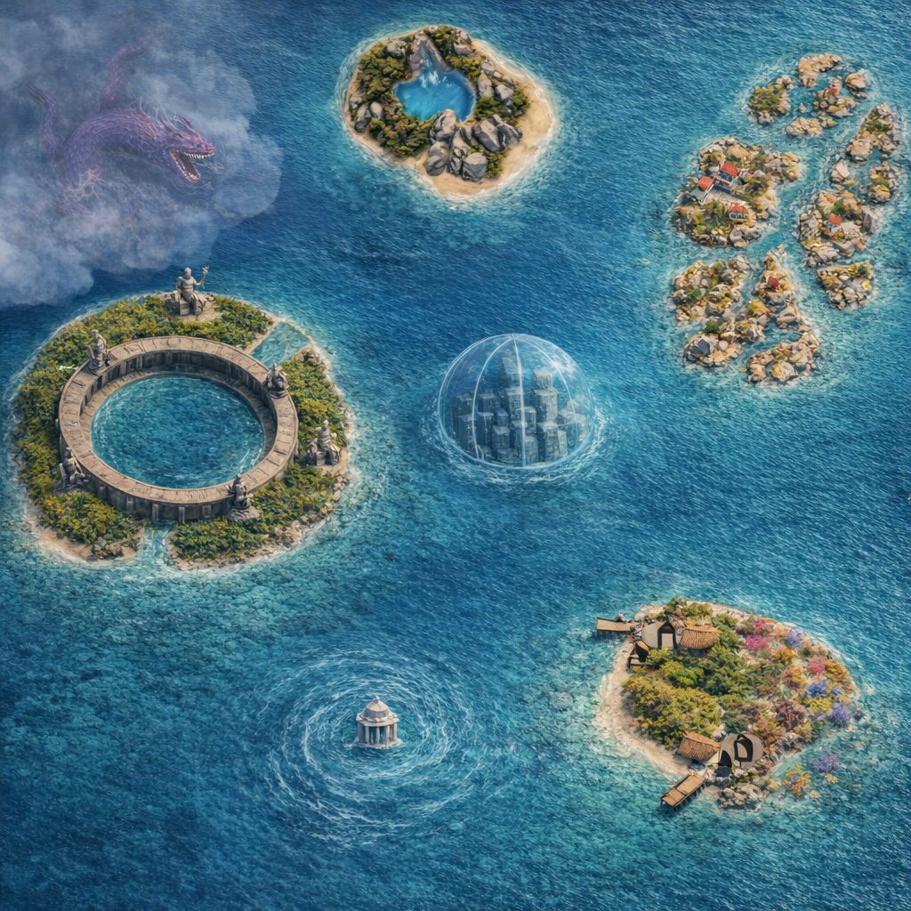

Nérélys
Nérélys est une île d'eau, connue pour ses eaux pures à perte de vue et pour sa lumière bleutée qui ne s'éteint jamais totalement. Il paraît qu'on peut parfois entendre Hydrior au loin, sa voix portée par les vagues.
Un continent archipel dominé par l'eau : lagunes peu profondes, mers abyssales, atolls et îles de toutes tailles. La vie se déroule à la surface et sous la surface : villages flottants, cités immergés, forêts de coraux. Les voyages se font presque exclusivement par voie maritime, souvent en coopération avec animaux marins Les déplacements se font presque exclusivement par voie maritime, souvent en coopération avec animaux marins (tortues géantes, dauphins, raies,... )